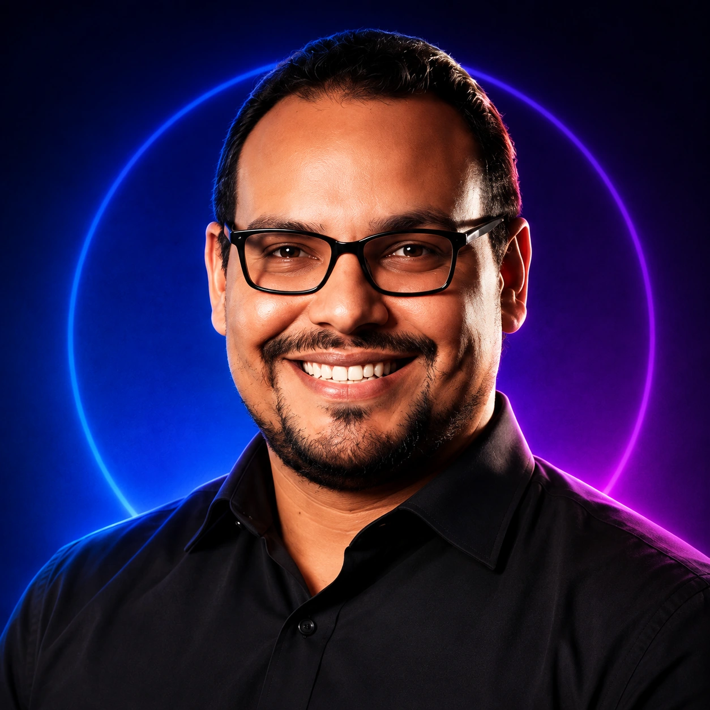

Company
Byteploy
The Chilean custom-software company I founded to design, build, deploy, and operate production systems for clients in Chile and abroad.
Senior Full-Stack Software Engineer
I build and scale production software—from multi-tenant Rails SaaS and real-time systems to React and Angular frontends and AWS infrastructure. Since 2014, I’ve combined hands-on engineering, technical leadership, and product ownership.

I’m a senior full-stack software engineer based in Santiago, Chile. My work spans HR-tech, legal-tech, and business-operations platforms, with responsibility from architecture and hands-on delivery to technical leadership and production operations.
At LegalAtoms (Seattle, remote), I work across Rails, Angular, AWS messaging, and real-time systems. Previously, at Rankmi, I led engineers and helped modernize an HR platform serving more than 100,000 users.
I also build and operate products through Byteploy, including Makundal, a multi-tenant SaaS/ERP for food and retail operations.
LegalAtoms · Seattle, USA (Remote)
Aug 2025 – Present
Makundal · Independent product, operated through Byteploy
2024 – Present
Rankmi · Santiago, Chile
Mar 2022 – Apr 2025
Digital Dashboard Seven · 4 Talent · Nala · Santiago, Chile
2020–2022
Chile & Venezuela
2014–2019
Companies, products, and client work where I combine software engineering, product strategy, and end-to-end delivery.
Company
The Chilean custom-software company I founded to design, build, deploy, and operate production systems for clients in Chile and abroad.
Product
A production multi-tenant SaaS/ERP I created and operate to bring sales, inventory, purchasing, and production workflows into one platform for food and retail teams.
Client Website
A fast, responsive, multilingual website I built and deployed through Byteploy, with a digital menu, local SEO, structured data, direct ordering links, analytics, and automated deployment.
Framework-agnostic: vanilla JavaScript, React (Hooks, Redux, Context), Angular, Vue.js, TypeScript. Comfortable in any JS framework, or none at all. This site is hand-written vanilla JS.
Ruby on Rails, Node.js, REST APIs, GraphQL, Sidekiq, AnyCable, WebSockets
PostgreSQL, MySQL, MongoDB, Redis, SQLite
AWS (EC2, S3, SQS, SNS, SES, CloudWatch), Google Cloud Platform (GCP), Cloudflare, Docker, Nginx, Linux, GitHub Actions
Microservices, Event-Driven Architecture, Apache Kafka, Real-Time Systems, Observability
RSpec, Test-Driven Development, Code Review, End-to-End Testing
Alongside my software-engineering work, I create Spanish-language gaming and streaming content as AlirioPlay, focused on FPS and multiplayer games—gameplay, first impressions, updates, and sessions with friends.
Behind the streams, I use OBS with a dedicated server running Restreamer for multistreaming, supported by my home lab, network infrastructure, and automation. This setup is a practical extension of how I approach infrastructure: observable, repeatable, and built to evolve.
I’m open to collaborating on Ruby on Rails and JavaScript projects, especially with remote teams that value clear asynchronous communication. The fastest way to reach me is by email, in English or Spanish.